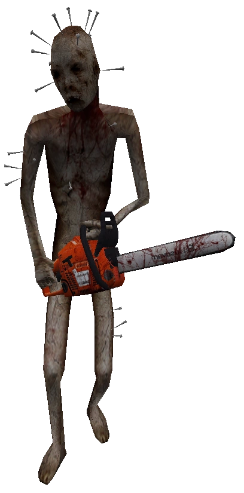
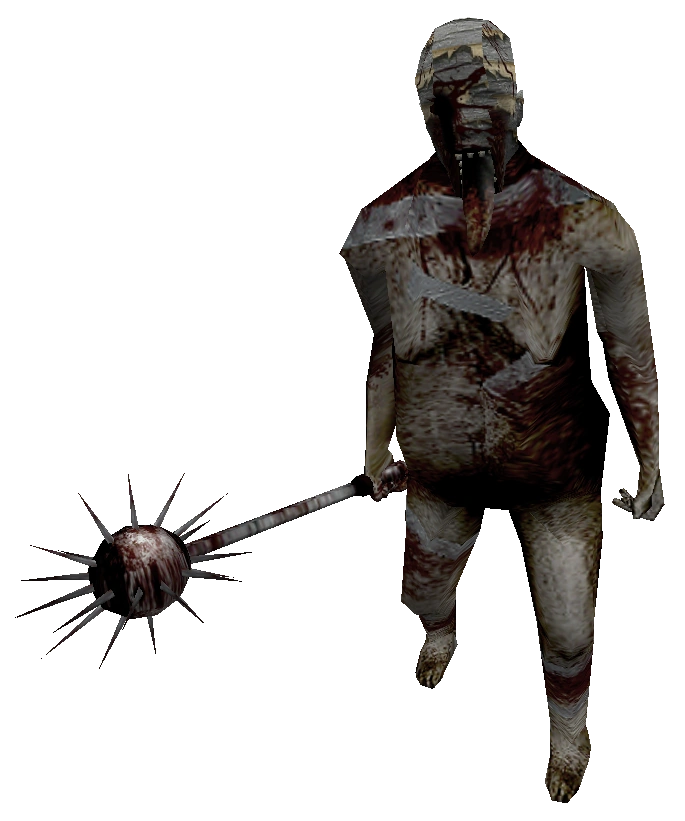
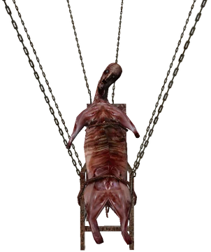
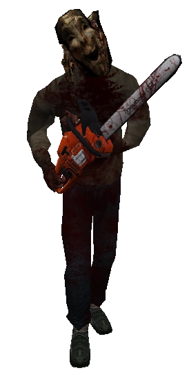
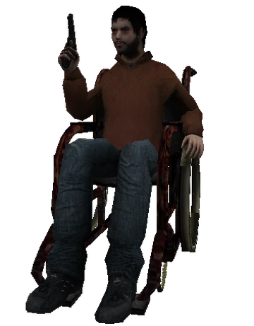
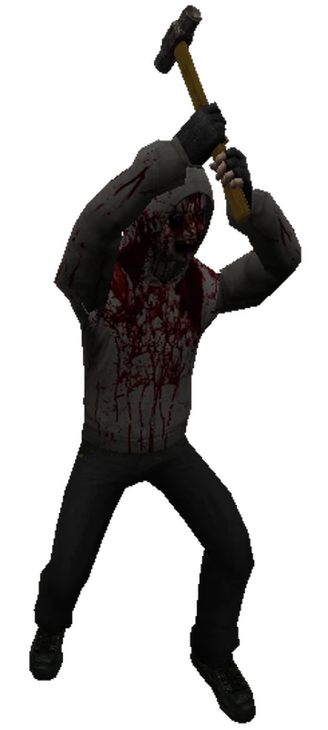
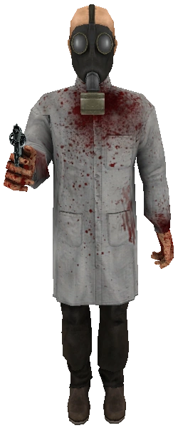

Boss #1 - Sawer
The first boss encountered in the game, found during the nightmarish apartments, may only take damage once the eye on his back is attacked while he is knealing on the ground. The best approaches to defeating him is to either load up lots of ammo to take him down fast, or dual wield the knife and gun to shoot him down and take damage with the knife. If Simon gets hit by Sawer, he instantly dies by getting his abdomen severed in half.
Boss #2 - Mace
Mace is encountered after simon watches the doctor flee after torturing and beheading a man for the location of a key, in which the boss mace has the key and swallows it before the start of the fight. It is suggested that Mace cannot see, as he stops frequently to find the scent of Simon. Weapons do not work on Mace, as the only way to defeat him is to turn 1/4 valves to turn the generator on to charge electricty through the flooded room. The amount of valves it will take to destroy Mace depends on the difficulty set on the game.
Boss #3 - Carcass
A particularly important boss for ending outcomes, the ending of the game will depend on how the player chooses to approach the boss. Simon may either choose to kill this eternally-suspended boss or avoid the fight altogether. Before the fight commences, Simon's love interest Sophie commits suicide in front of him by jumping off of the skyscraper they idle on. It is believed that it is a representation of Simon's grief pertaining to his inability to walk, in which he states that he feels like "a sitting piece of meat on a chair"
Reccuring Boss - Sawrunner
Sawrunner is easily the most overpowered boss of the entire game with the most health and speed, and not to mention that he kills in a single hit.
- Appearance #1 - Ronald Street alleys
- Appearance #2 - Saxon Avenue station
- Appearance #3 - Nightmare Sequences in apartment building
- Appearance #4 - Ending Forest segment
- Final appearance - Kirkville sewers
Final Boss [1] - Sick Simon
This manifestation of real simon may only be encountered in certain endings. In this case, he will be found by book simon in the nightmare realm (his own mind) with psychic abilities after committing suicide. He attacks by levitating and throwing tems at the player, forcing the player to jump and crouch to dodge them. [this of which leads to the bad ending] Sick simon is killed by his "evil twin" via strangulation. The death of sick simon results in book simon collapsing as well, depicting the mental battle he faces against himself mentally before committing suicide.
Final Boss [2] - Book Simon
In this ending, the user plays as real simon and faces book simon, who is revealed to be a manifestation of Simon's guilt and trauma. Once killed, the end cutescene where real Simon survives is commenced. This is the ending where Simon gets mental help and copes healthily by writing in his book.
Final Boss [3] - Doctor Purnell
Depending on the players choice, being if Simon trusts Purnell with the gun or not, Purnell will be bludgened to death by Simon in his apartment. It is later revealed that Purnell was Simon's real psychiatrist in which represented Simon's untrust and fear post-incident.